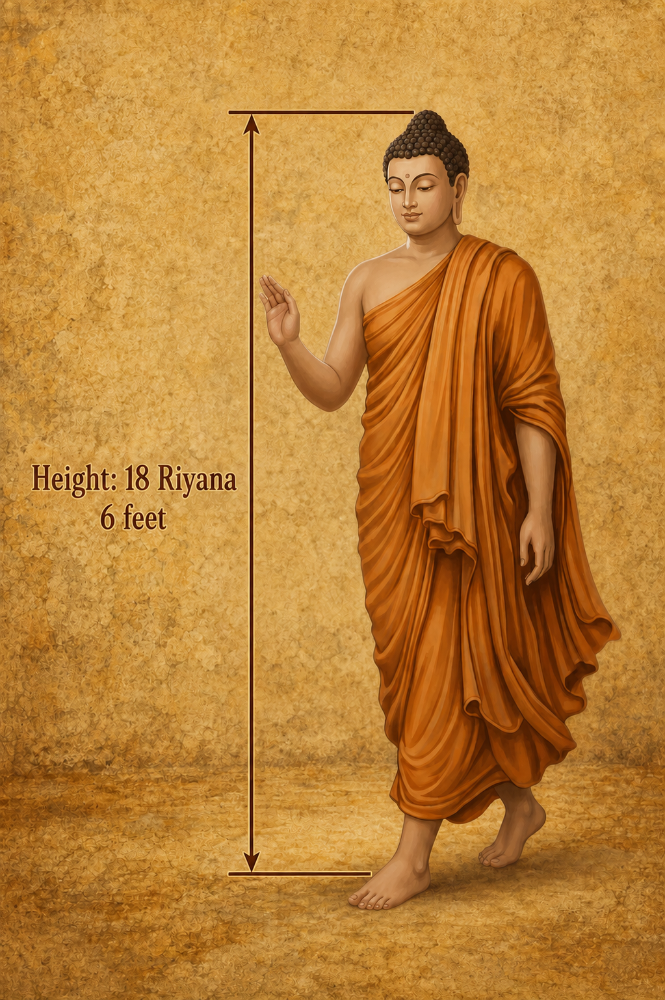
Was the Buddha really 27 feet tall?
Ancient texts describe the Buddha as 18 riyana in height.
Using the accepted 18-inch riyana, that makes him an impossible 27 feet tall.
But a forgotten four-inch measure — the Miti Riyana — produces a height of exactly six feet.
Have we misunderstood an ancient measurement for centuries?
Discover the evidence behind the forgotten Miti Riyana Miti Riyana Video Miti Riyana Original Research PaperOne Island, Two Ancient Measurements
Could the Lost Yojana Unlock the Geography of Early Lanka?
Two respected ancient records describe the same island in yojanas — yet they give two different sets of measurements. That difference may hold an important clue to how we understand the geography of early Lanka and the wider Buddhist world.
| Ancient source | Length | Breadth |
|---|---|---|
| Dipavamsa, Chapter XVII | 32 yojanas | 18 yojanas |
| Faxian's travel record | 50 yojanas | 30 yojanas |
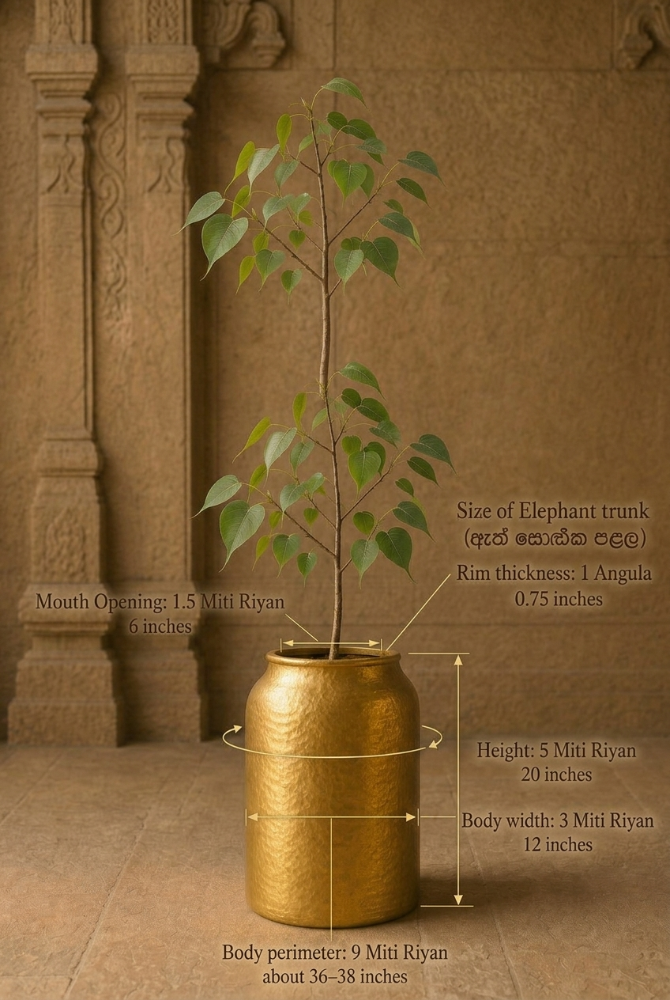
“The golden vessel in which the Bodhi tree was brought measured nine cubits in circumference, five cubits in height and three cubits in width. It was one finger-breadth thick, and its rim was as broad as the trunk of a young elephant.”
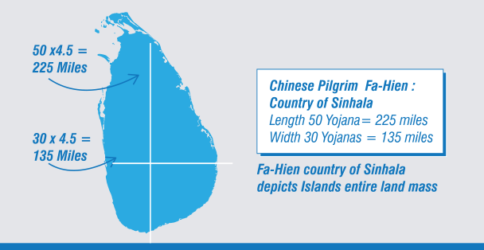
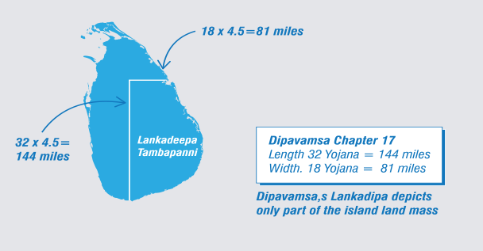
ANTIQUITY RECALIBRATED
“Where archaeology, inscriptions, ancient texts, cartography and measurement converge.”
01 Why does this research matter?
Discover why ancient geography should be tested again against material and spatial evidence.
02 What is Antiquity Recalibrated?
An independent investigation connecting inscriptions, texts, measurements, maps and landscapes.
03 How is it different?
The reconstruction begins with locatable evidence rather than an assumed historical map.
04 Where do I begin?
Start with the ancient yojana—the question from which the wider investigation emerged.
Not papers. Just discoveries.
Click any discovery for its summary and the evidence behind it.
Early Buddhist geography has long placed Jambudīpa on the Indian mainland, largely on the strength of Chinese pilgrim accounts and selectively-read Sri Lankan chronicles. Plotting over a thousand pre-Christian Brāhmī inscriptions — preserving names such as Ānanda, Sāriputta, Visākhā, and Dhammadinnā — onto one-inch survey maps produces a different, internally consistent picture: a Jambudīpa located within the island itself, with Lankādīpa as one region within it rather than a separate land.
Over 1,000 pre-Christian Brāhmī inscriptions from Inscriptions of Ceylon, Vol. I, cross-checked against the Pāli Canon and its commentaries, then tested against the Mahāparinibbāna Sutta's travel itinerary using a recalibrated yojana of roughly 4.5 miles.
Individually inconclusive — neither name was unique to one person — but treated as part of a cumulative dossier tested alongside chronology, place-names, routes, and archaeology. An equivalent survey of Indian inscriptions and Sanskrit/Prakrit name-variants has not yet been completed for comparison.
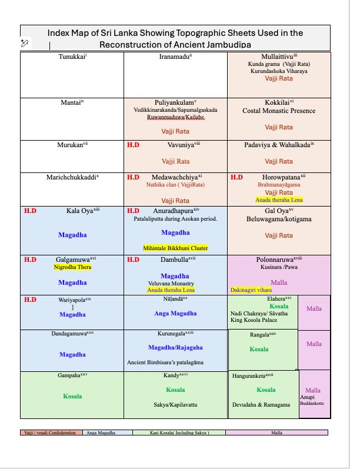
The ancient Yojana's actual scale has long been debated. Early Indian sources define it as a dhanu-based linear unit — 4,000 dhanu of 6 feet each — yielding roughly 4.5 miles, not the inflated 12-mile value later medieval lexicons introduced and British-era translators uncritically adopted.
Arthaśāstra and Lalitavistara definitions of the dhanu-based yojana; the 12th-century Abhidhānappadīpikā's inflated 12-mile figure identified as the source of the distortion; independent corroboration from A. L. Basham and from Kher (1965), both confirming an early yojana of c. 4.5 miles.
Greek sources describe Taprobane as a landmass “separated from the mainland by a river” — a detail present in Megasthenes and Arrian but dropped from some twentieth-century translations. Read against the Dīpavaṃsa's own dimensions for Lankādīpa/Tambapaṇṇi (32 × 18 yojanas) and Fa-Hien's dimensions for the country of Sinhala (50 × 30 yojanas), and converted using the recalibrated 4.5-mile yojana, Taprobane resolves not as the whole island but as one coherent region within it.
Megasthenes' Indica and Arrian, compared against J. W. McCrindle's 19th-century translation and later facsimile editions; Dīpavaṃsa Chapter XVII; Fa-Hien's account of Sinhala; and a cartographic correlation in which Lankādīpa's 32 × 18-yojana dimensions align almost exactly with an 8 × 3 block of one-inch-to-one-mile Survey of Ceylon sheets.
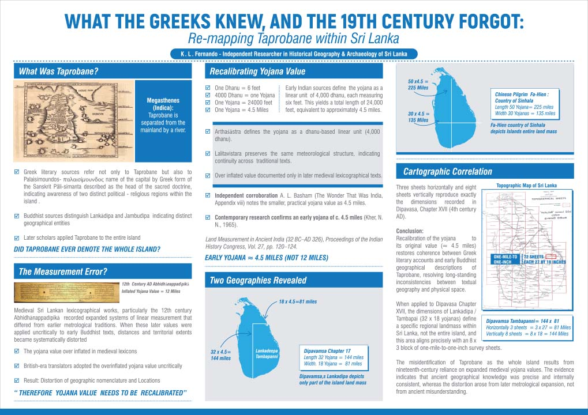
Lankādeepa was not a name for the whole island, but for a specific south-eastern region within it. Applying the recalibrated yojana to the Dīpavaṃsa's own dimensions for Lankādeepa/Tambapaṇṇi (32 × 18 yojanas = 144 × 81 miles) and overlaying that onto the one-inch Survey of Ceylon map series produces a precise match — three sheets wide, eight sheets tall — with the same south-eastern quarter of the island where Vijaya's chronicled settlement, the Buddha's meditation sites, and the Mahāvihāra/Mahāthūpa foundation tradition all sit. This is the paper's central finding: Lankādeepa as one region within the wider country of Sinhala, not a synonym for it — a reading that tallies directly with the Mahāvaṃsa and Dīpavaṃsa's own narration.
Dīpavaṃsa Chapter IX (Vijaya's southern settlement at Tambapaṇṇi) and Chapter XVII (Lankādeepa's dimensions); pre-Christian Brāhmī inscriptions from Bovattegala, Kottadamuhela, Mandagala, Hennanegala, and Mottayakallu recording five-generation royal genealogies; archaeological evidence of urbanisation and trade at Tissamaharama and Akurugoda; one-inch-to-one-mile Survey of Ceylon topographic sheets; and, following peer review, Vitharana's Sri Lanka – The Geographical Vision (1999) and Pieris's Sinhalese Social Organization: The Kandyan Period (1956).
Submitted to the Royal Asiatic Society of Sri Lanka, 15 October 2024 · peer-reviewed and revised at the reviewer's request · forthcoming in the RASSL Journal.
The Miti Riyana, a lesser-known traditional unit, is restored to view through its meaning, application, and relationship to other ancient measurement systems.
Ancient texts, inscriptions, traditional knowledge, historical measurements, and comparison with known architectural and geographical dimensions.
James Prinsep's celebrated 1837 decipherment of the Brāhmī script had a quiet collaborator: Ratnapala, an ex-Ceylonese Buddhist monk and Pali scholar who helped Prinsep translate key inscriptions, including the Delhi pillar's regnal-year sentence, yet was credited only in passing across the published record.
Prinsep's letters to Sir Alexander Cunningham, published in the Archaeological Survey of India (1862); the Journal of the Asiatic Society of Bengal, Vol. VI (1837); H. Walter's 1834 paper crediting Ratnapala's Pali-Burmese translation work (Journal of the Asiatic Society, No. 29, May 1834, pp. 209 & 214); and Ratnapala's own biography — ordained under the Amarapura Nikāya, service in the first Anglo-Burmese War, and a later life as a Calcutta businessman.
Published as an Editor's Pick in The Journal of Archaeology & Heritage Studies (JAHS), Rajarata University of Sri Lanka, 8(II) 2021: 18–24.
Applying Renfrew and Bahn's processual and post-processual paradigms, inscriptional clusters — at Mihintale, VessāgĪriya, and beyond — align with canonical janapadas such as Vajji and Magadha, revealing interconnected monastic networks rather than isolated sacred sites.
1,234 pre-Christian Brāhmī inscriptions across 269 sites, cross-referenced with the Theragāthā and Therīgāthā Aṭṭhakathā, and mapped against Elahera and Minipe canal corridors.
Ānanda Thera as anchor: as the Buddha's attendant, his recorded dwellings anchor the lived landscape. His name appears in pre-Christian Brāhmī inscriptions at Dambulla (IC 845, a saddhivihāriya lineage record) and Brahmanayagama, Horowpothana (IC 155) — two established monastic centres, not isolated shrines, corresponding spatially to Rājagaha and Vesālī.
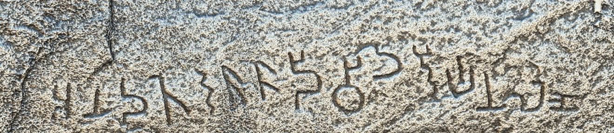
The Milindapañha traces Nāgasena's training in detail: ordained and instructed by Rohana, brought into Assagutta's community at the Vattaniya hermitage, then sent onward — "Go, Nāgasena, to Pā\u1e6daliputta… in the Asoka Park dwells the venerable Dhammarakkhita" — to study under Dhammarakkhita, before travelling on to Sāgala for the dialogue with King Milinda. Every name in that training chain — Assagutta, Dhammarakkhita, So\u1e47uttara, Nāgasena — occurs in Sri Lanka's early-Brāhmī cave inscriptions, alongside Nigrodha, Sumana, and Mahāvaru\u1e47a elsewhere in the corpus, and an ācariya Pārāsariya at Sithulpavva, matching a teacher of that name associated in Buddhist literature with Kajangala. None of these were unique personal names, so identity cannot be assumed from a name alone — but their combined appearance places Sri Lanka's early monastic society within the same world of names, teachers, and institutions as the Milindapañha narrative.
Assagutta (IC 3), Dhammarakkhita (IC 76), So\u1e47uttara (IC 83), Nāgasena (IC 451, 602, 609), and ācariya Pārāsariya (IC 604) at Sithulpavva; Nigrodha, Sumana, and Mahāvaru\u1e47a recorded elsewhere in the early-Brāhmī corpus; and, as an independent benchmark for confirmed overseas movement, the Rajagala inscription commemorating theras Mahinda and I\u1e6d\u1e6dhiya, which explicitly records their arrival "from across the sea" — the strongest case in the corpus, combining name, status, origin, and memorial context.
A shared name is suggestive, not proof: the inscriptions do not supply the father-teacher-pupil-monastery relationships needed to confirm a single individual's identity. What they support is a connected Buddhist cultural zone in which the same monastic names, teachers, and patterns of mobility circulated between Jambudīpa and Lankādīpa — not, at this stage, a claim that any specific inscribed Nāgasena is the Nāgasena who debated King Milinda.
The Selasuttavaṇṇanā (Paramatthajotikā II, pp. 437–440) traces the mythic path of the waters of Lake Anotatta as they circle the lake, fall as a cascade, strike a rock named Tiyaggala, pool into Tiyaggalapokkharaṇī, run on as Bahalagaṅgā and Ummaggagaṅgā, and finally split into five: Gaṅgā, Yamunā, Aciravatī, Sarabhū, and Mahī (locally Mahāmahīgaṅgā). Sri Lanka's one-inch topographic maps offer possible geographical parallels, most notably a linked system in which the Kalu Ganga's continuation joins the Amban Ganga, which meets the Mahaveli Ganga in the Polonnaruwa District. A distinctive loop in the Amban Ganga is proposed as the Nādi Chakra ("river circuit") in which tradition places King Kosala's palace and Jetavanārāma.
A specific textual anomaly motivates re-examining this passage: Tiyaggala, the rock and pool named at the centre of the river's course, does not correspond to any known toponym in the Himalayan region the text nominally describes, but reads as a Sinhala place-name. The Haṭhṭotuwa Amuna, which diverts water from the Amban Ganga into a channel running roughly parallel to it, may have doubled as a navigable canal rather than serving irrigation alone. Two archaeological sites marked on the one-inch map fall within or near the proposed Nādi Chakra and may offer supporting evidence, though their dating and character still need direct examination.
Matching ancient river and place names to present-day courses is inherently conjectural, and the Tiyaggala identification in particular is an initial linguistic observation, not a settled reading. This is presented as a preliminary geographical model — open to testing against Pali commentarial texts, place-name evidence, archaeology, satellite imagery, and hydrological data.
Testing whether ancient irrigation canals also served as navigational networks, moving people and goods, not only water.
Historical texts, archaeological remains, topographical maps, hydrological analysis, and field observation of canal alignments and gradients.
The measurement that changes everything
Ancient texts give distances in yojana. The value you assign decides whether the geography fits Sri Lanka or sprawls across a continent. Try both.
Now do the same with the riyana
Three canonical descriptions, read under each standard. Switch units to see which one holds up.
The Buddha’s height
The golden bowl
The sandalwood pyre
Figures update from the same riyana counts given in the source texts — only the inch value assigned to one riyana changes.
Where the four-inch reading holds
The same three passages, and one contemporary caution, set out source by source.
Records the Buddha’s height as eighteen riyanas. Read at 18 in per riyana this yields an impossible 27 ft; read at 4 in, a credible six feet.
Describe the golden bowl carrying the Bodhi branch as nine riyanas in circumference, five in height, three in diameter. At four inches per riyana it emerges as 36 in around, 20 in high, 12 in wide — sized for ritual use.
Describes a sandalwood pyre of twenty-one riyanas: 31.5 ft under the inflated system, a realistic seven feet under the four-inch measure.
Observed that the units codified in the Abhidhanappadipika were largely imaginary constructs, never in practical use — a caution colonial-era historians did not heed.
When the text and the map agree
The converter above is a tool. Here is one real case where the recalibrated yojana turns a canonical distance into a measurement you can check on a survey map.
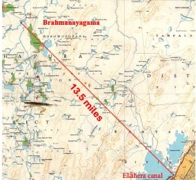
Balangoda Ānanda Maitreya's Buddha Charitaya records the distance from the Gaṅgā to Vesālī as 3 yojana, and places Rājagaha 8 yojana south of Vesālī.
3 yojana × 4.5 miles = 13.5 miles.
On the one-inch survey map, the distance from the Brahmanayagama area along the southern waterway measures ≈ 13.5 miles — the two figures converge.
The distance match is a genuine, checkable result: a “Gaṅgā” three recalibrated-yojana from Vesālī lands exactly where the map places a major waterway. That the waterway is specifically the Elāhera Yodha Ela — the only canal on the southern route from Brahmanayagama, running on to Trincomalee — remains a proposal still being tested against further cartographic and hydrological evidence.
“Rivers, reservoirs, and canal systems were not just water infrastructure — they were the movement corridors of an interconnected monastic landscape.”
Beyond Conventional Narratives · Archaeology Symposium 2026A framework of converging evidence
No single source tells the whole story. Each is tested independently, then cross-validated against the rest.
Understanding the past requires more than relying on a single source of evidence. Historical texts, while invaluable, represent only one part of the story. This research integrates archaeology, epigraphy, historical cartography, hydrology, ancient measurements, landscape analysis, and textual studies — each examined independently before being compared and cross-validated.
Inscriptions provide names, locations, and social information. Ancient literature preserves tradition and memory. Maps and landscapes reveal forgotten settlements and waterways. Scientific reconstruction of measurements offers a further, independent test. Where these converge, a pattern that no single source could show on its own comes into view.
Names that fall into three eras, not at random
Plotted onto the map, the correlated inscriptions don't scatter — they cluster into three distinct chronological horizons. Choose one to see who appears.
Each proposed correlation was first tested cartographically through spatial mapping before any chronological interpretation. Inscription numbers (IC) and Dictionary of Pāli Proper Names (DPPN) references are given where recorded.
Where the canonical places may actually sit
Each identification below pairs an ancient name from the texts with a proposed Sri Lankan location, and the evidence behind it. These are testable reconstructions, not settled facts — choose one to see the case.
Identifications rest on converging lines — canonical descriptions, pre-Christian Brāhmī inscriptions, one-inch survey-map geography, and the recalibrated yojana. Each is offered for testing and refutation, in line with the project's stated principles.
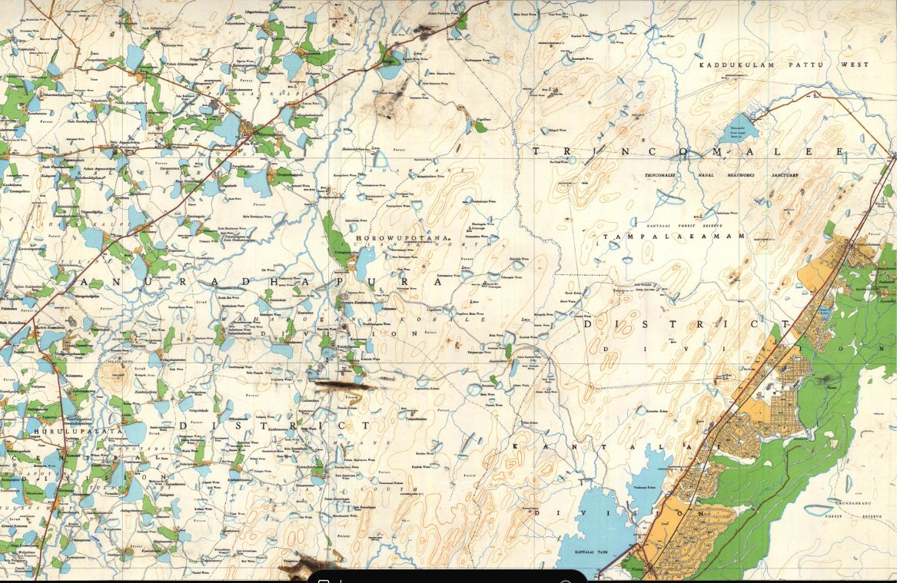
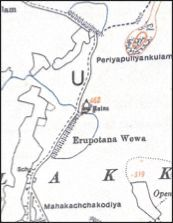

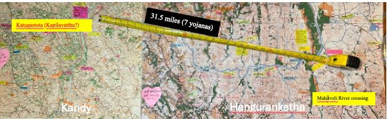


How the findings were reached
Discoveries explain what was found. This is how each was tested.
Epigraphy
Cartography
Canonical Literature
Metrology
Hydrology
Archaeology & Settlement
Reading the island's own registers
Long before colonial surveys, Sri Lanka kept its own boundary-books. These ola-leaf registers are being read again as geographical evidence.
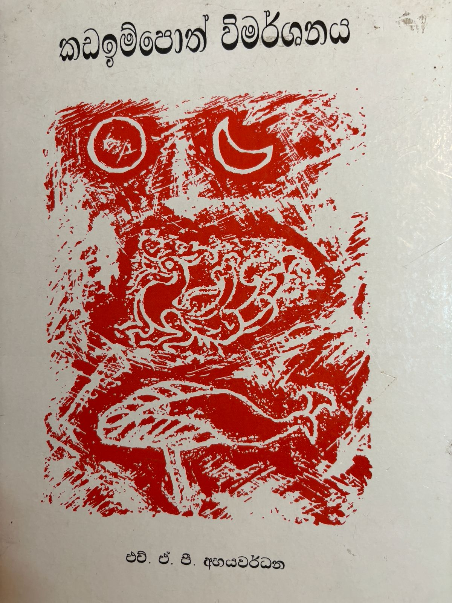
The Kadaim Pota — literally the “book of boundaries” — is a Sinhala register that divides the entire island into named rata (districts) grouped under the three great divisions of Ruhunu, Pihiti, and Maya. Compiled from older palm-leaf sources, it preserves a geography of Sri Lanka told from the inside, in its own place-names and its own categories.
Alongside it, the Lekam Miti registers record the island's administrative machinery: the writing-offices, land surveys, and revenue institutions of the ancient kingdoms. Together they document something the standard histories overlook — that early Sri Lanka ran a literate, record-keeping state with named scribal titles such as the Jayamaha Lenao granted to Bodhigupta, the Mahalekhaka, and, under Parakramabahu I, the Antarangadhura office.
The Sinhala term lenavo (writers/scribes) and the office of “Maha Lekha” have a striking parallel in the Asokan edicts. The connection between Sri Lanka's scribal tradition and the writing culture of Jambudīpa is a live line of inquiry — one this project argues has been read in only one direction. How that scribal culture moved, and which way, remains to be established from the sources rather than assumed.
Six research programmes
Organised by theme, not by publication date. Hover a card for a one-line summary.
Forgotten History
Ancient Measurements
Reading the Landscape Again
Early Buddhist Geography
Ancient Buddhist Literature
Inscriptions
“Over a thousand pre-Christian Brāhmī inscriptions were long dismissed as too brief to matter — until mapped as a single, connected body of evidence.”
Epigraphic Evidence for Sixth-Century BCE Literacy in JambudīpaThe rules this project holds itself to
Seven commitments that apply to every discovery on this site.
Evidence Before Interpretation
Every conclusion is derived from independently verifiable evidence rather than inherited tradition alone.
Convergence
No historical identification is accepted on a single line of evidence.
Chronology
Evidence is analysed within its historical period before comparisons are made across periods.
Reproducibility
Sources, calculations, coordinates, and methods are presented so other researchers can repeat the analysis.
Transparency
Uncertainties, limitations, and competing explanations are acknowledged, not smoothed over.
Scholarly Dialogue
The goal is to contribute new evidence to academic discussion, not to replace one orthodoxy with another.
Provisional Conclusions
Every reconstruction stays open to testing, refinement, correction, and further discovery.
A permanent record of the work
Peer-reviewed papers alongside the talks, footage, and archive behind them.
Publications
Papers, posters, abstractsConference Presentations
RAS · ICOMOS–CCF · EAAResearch Videos
Short documentariesYouTube Channel
Playlists by themeInvited Lectures
Universities & societiesMedia Interviews
Print, radio, podcastsPhoto Gallery
Fieldwork & archivesDocumentary Archive
Manuscripts & survey sheets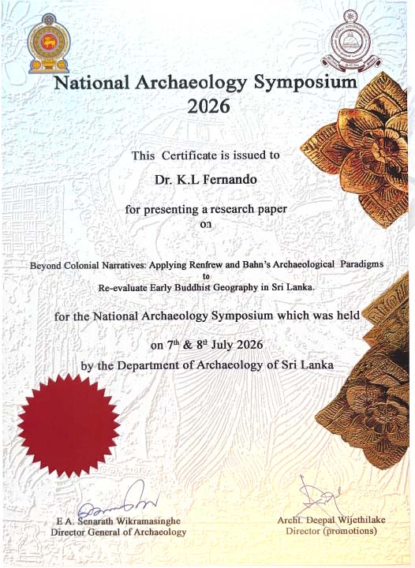
Certificate of presentation, National Archaeology Symposium 2026, Department of Archaeology of Sri Lanka, 7–8 July 2026 — for the paper Beyond Colonial Narratives: Applying Renfrew and Bahn's Archaeological Paradigms to Re-evaluate Early Buddhist Geography in Sri Lanka.

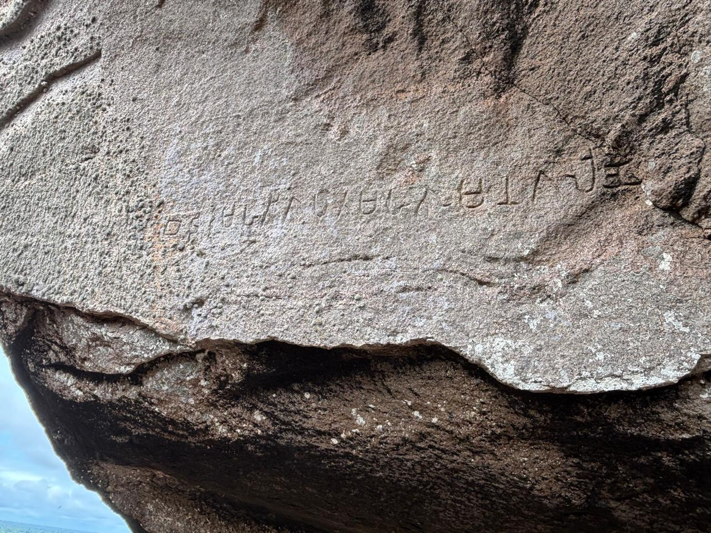
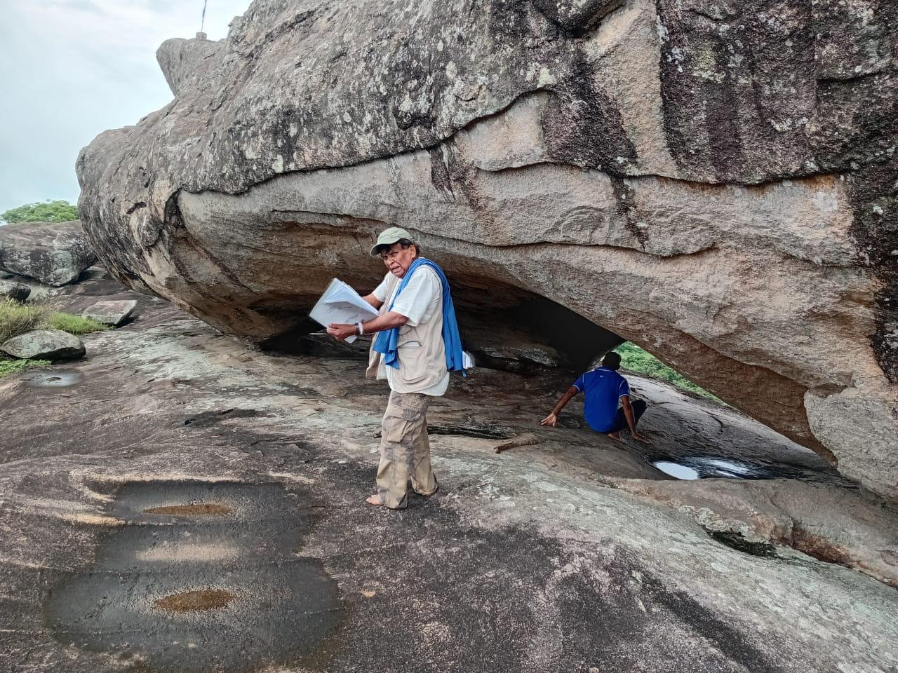
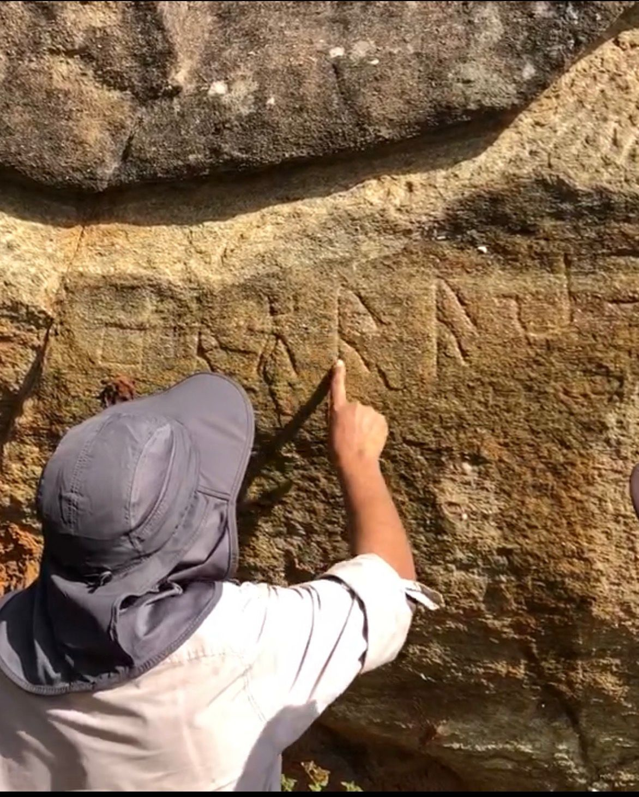
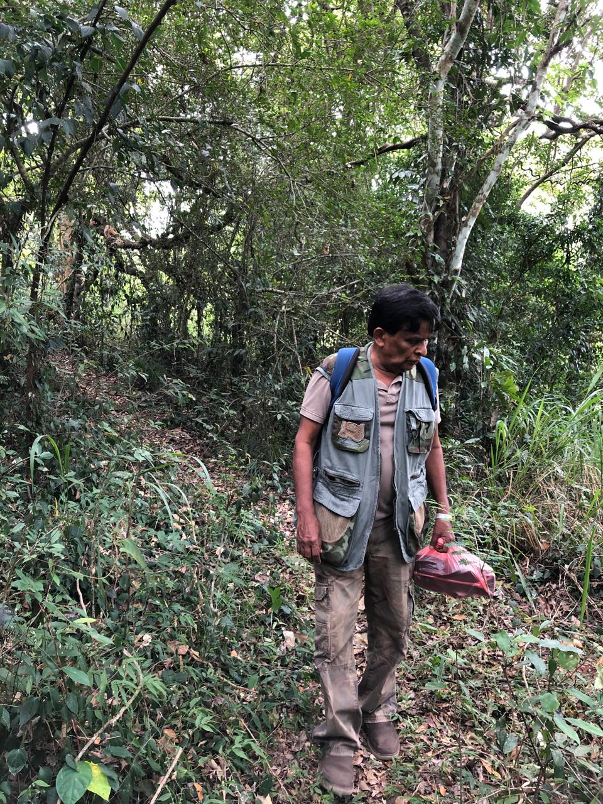
Shorter reads, wider audience
Not every idea needs a formal paper first.
01
From Scalpel to Survey: Precision, Measurement, and the Reinterpretation of Early Buddhist Landscapes
An exploration of how precision, measurement, and modern surveying methods can help reinterpret the landscapes associated with Early Buddhism.
02
Who Was Ratnapala?
Ratnapala was a Ceylonese Pāli scholar and former Buddhist monk whose contribution to the decipherment of Brāhmī has been largely forgotten. Trained in Sri Lanka’s monastic tradition, he later learned Burmese in Arakan before settling in Calcutta. Records of the Asiatic Society show him interpreting Pāli and Burmese inscriptions and assisting James Prinsep with important passages in the Delhi pillar inscription. Ratnapala should not be regarded as the sole decipherer of Brāhmī, but the surviving evidence identifies him as a significant collaborator. His story restores an overlooked Sri Lankan contribution to the foundations of modern South Asian epigraphy.
03
The Five Great Rivers and the Nadi Chakra of the Amban Ganga
The Sela Sutta Vaṇṇanā preserves a geographical description associated with *Thiyaggala Kanda Pio, a Sinhala expression linked to the surrounding landscape. The name **Umma Ganga* also remains in local use. The canonical Nadī Chakra, associated with Sāvatthi and the palace of King Kosol, can be identified clearly on the one-inch Survey map. The text describes the king observing monks bathing in the river from his palace balcony. Within the Amban Ganga system, five major rivers flowing eastward remain identifiable. Their direction, convergence and relationship to the terrain provide a testable framework for reconstructing this canonical landscape.
04
Reading Inscriptions in the Field
Field documentation includes a careful eye copy, detailed photography and, where conservation conditions permit, an estampage that records the carved surface at full scale. The inscription is examined under changing angles of light to distinguish intentional strokes from cracks, weathering and natural irregularities. These records are then studied in the office, where each letter is compared with established palaeographic forms, published readings and contemporary language. Modern 3D photogrammetry has greatly improved this process by creating a measurable surface model that can reveal shallow or damaged strokes. The final reading therefore combines field observation, estampage, photography, digital modelling and comparative analysis.
05
What Archaeologists Can Learn from Ancient Measurements
Ancient measurements connect written descriptions with physical reality. The recovered *Miti Riyana, measuring approximately four inches, produces practical dimensions for objects described in Buddhist literature, including the Buddha’s recorded height, ritual vessels, funeral structures and ceremonial objects. At a geographical scale, the recalibrated **Buddhist yojana of approximately 4.5 miles* allows journeys, kingdoms and distances to be tested against maps, terrain and waterways. Together, these units demonstrate why later measurements should not be projected backwards onto earlier texts. Recovering the correct scale can transform an apparently exaggerated description into measurable archaeological evidence—and reopen questions about ancient landscapes, technologies and practices.
06
One Island, Two Ancient Measurements: Could the Lost Yojana Unlock the Geography of Early Lanka?
Two ancient sources describe the same island in yojanas, yet preserve strikingly different dimensions. The Dīpavaṃsa records Lankādīpa as 32 by 18 yojanas, while Faxian describes Sinhala as 50 by 30. This research asks whether they measured different territories and whether later, enlarged definitions of the yojana distorted the original geography. Recalibrating the early Buddhist yojana to approximately 4.5 miles produces proportions that can be tested against Sri Lanka’s landscape, routes and place-names. The question is not merely how large the island was, but what Lankādīpa and Sinhala meant to the writers who preserved these measurements.
Read Full ArticleFrom Scalpel to Shovel
Two careers, one guiding habit: question the accepted view, then test it against the evidence.
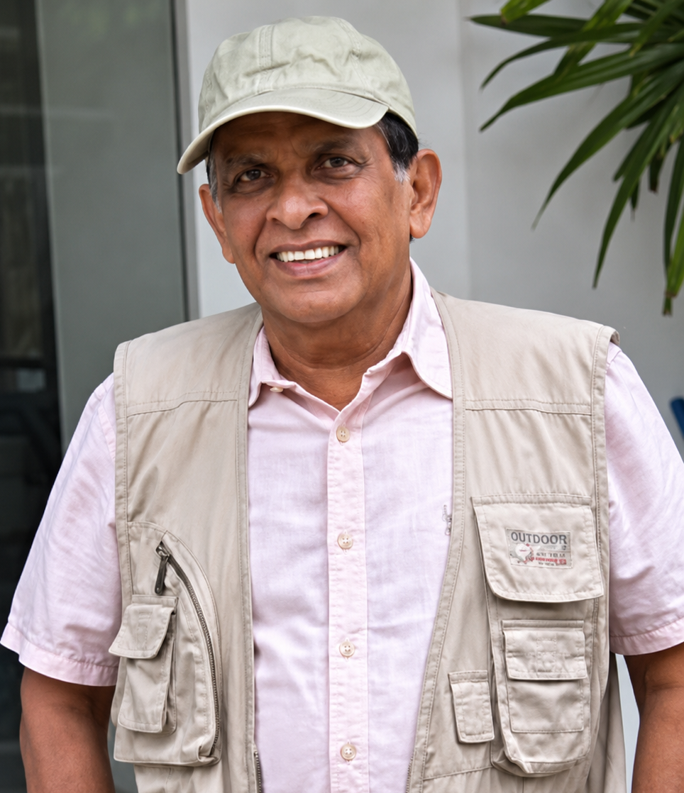
My life has been guided by two simple beliefs: that important discoveries often begin by asking questions others have overlooked, and that the free education I received in Sri Lanka placed on me a lifelong obligation to give something back. Curiosity, gratitude, and service have guided everything since — through a career as a surgeon, a teacher, and now an archaeologist.
On 1 June 1992, as Senior Lecturer in Surgery at the North Colombo Medical College, Ragama, I performed Sri Lanka's first laparoscopic cholecystectomy. Seventeen years on the Council of the College of Surgeons of Sri Lanka followed, then the Presidency in 2011, and the founding of the College's first dedicated Laparoscopic Skills Centre — later named the Dr. K. L. Fernando Skills Centre.
"Surgery taught me that progress comes not from accepting established views, but from questioning assumptions, testing evidence, and observing with precision."
The second chapter began, unexpectedly, during the COVID-19 lockdown. Time to return to a lifetime's collection of books on archaeology, history, and ancient Sri Lanka surfaced inconsistencies between accepted historical interpretations and the evidence itself. One question — what was the true length of the ancient yojana? — grew into a Postgraduate Diploma in Archaeology (University of Kelaniya, 2022), then studies in epigraphy and ola leaf manuscripts, and eventually a full multidisciplinary research programme.
- Introduced laparoscopic surgery to Sri Lanka
- Established national laparoscopic skills training
- Built the College of Surgeons Skills Centre
- Trained a new generation of minimally invasive surgeons
- Served as President of the College of Surgeons
The COVID-19 lockdown provided an unexpected opportunity to revisit a lifetime collection of books on archaeology, history, Buddhism, and ancient Sri Lanka. One simple question changed everything: “What was the true length of the ancient yojana?” It would grow into a multidisciplinary research programme.
- Diploma in Archaeology
- Extensive field visits
- Study of archaeological methodology
- Beginning of systematic historical reconstruction
Recognising that inscriptions preserve the earliest historical records, further training followed.
- Certificate in Epigraphy
- Study of Brāhmī inscriptions
- Ola Leaf Manuscript studies
- Expansion of historical source criticism
Using evidence from the Arthaśāstra, Lalitavistara, historical metrology, and cartographic analysis, the ancient yojana was recalibrated — the first major research breakthrough, and a measurable framework for reconstructing ancient geography.
- Forgotten Miti Riyana
- Ancient systems of measurement
- ICOMOS–CCF Conference presentation
- Continuing refinement of historical metrology
Historical detective work uncovered evidence suggesting the Sri Lankan scholar Ratnapala played an important role in assisting James Prinsep during the decipherment of the Brāhmī script, reconstructed from nineteenth-century archival reports that had remained largely unnoticed.
Years of study culminated in a multidisciplinary framework integrating canonical texts, commentaries, chronicles, pre-Christian Brāhmī inscriptions, cartography, hydrology, archaeology, and ancient metrology — letting independent datasets be examined together rather than in isolation.
Application of the framework led to the reconstruction of ancient Lankādīpa, Anurādhagrāma, Nāgadīpa, Kelaniya, Mahāgāma, ancient canal navigation, and early Buddhist landscapes — presented at the Royal Asiatic Society Annual Research Meeting, national archaeology conferences, and international forums.
"The journey continues." — current work: completing peer-reviewed publications, developing interactive archaeological maps, and expanding this research platform.Get in touch
Questions on a specific paper, an invitation to lecture, or a correction to propose — this reaches me directly.